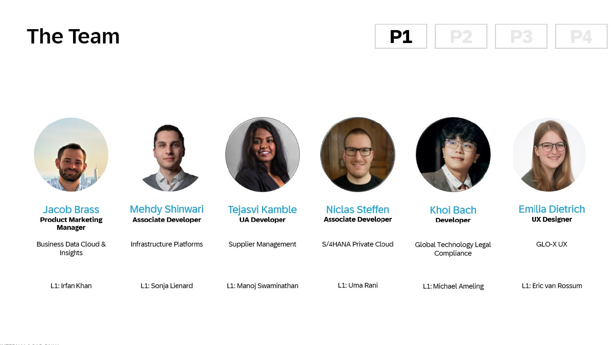
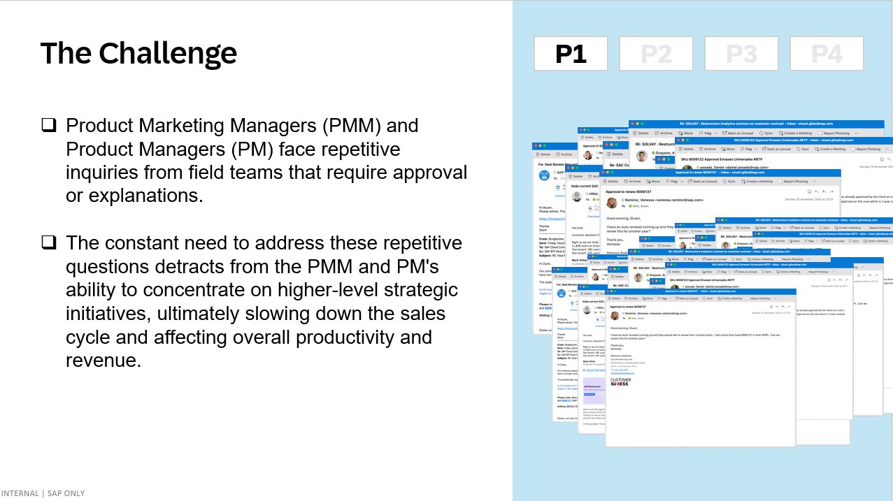
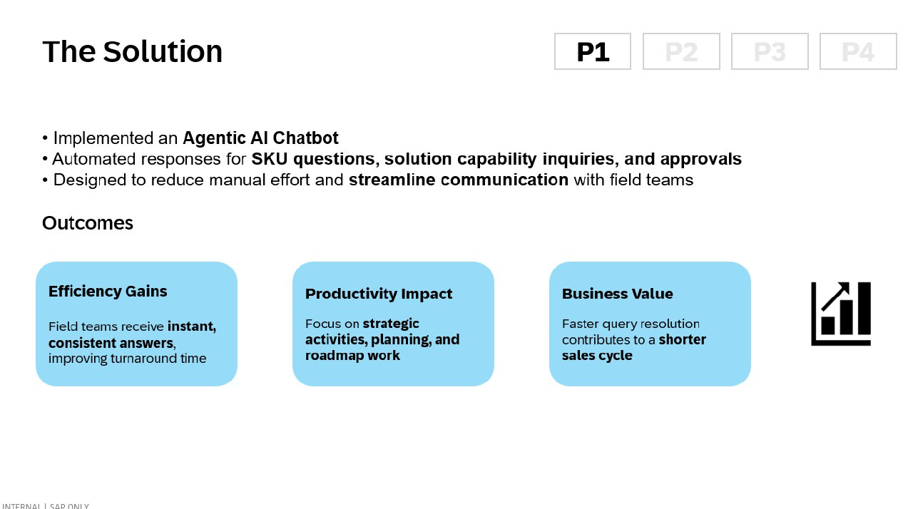
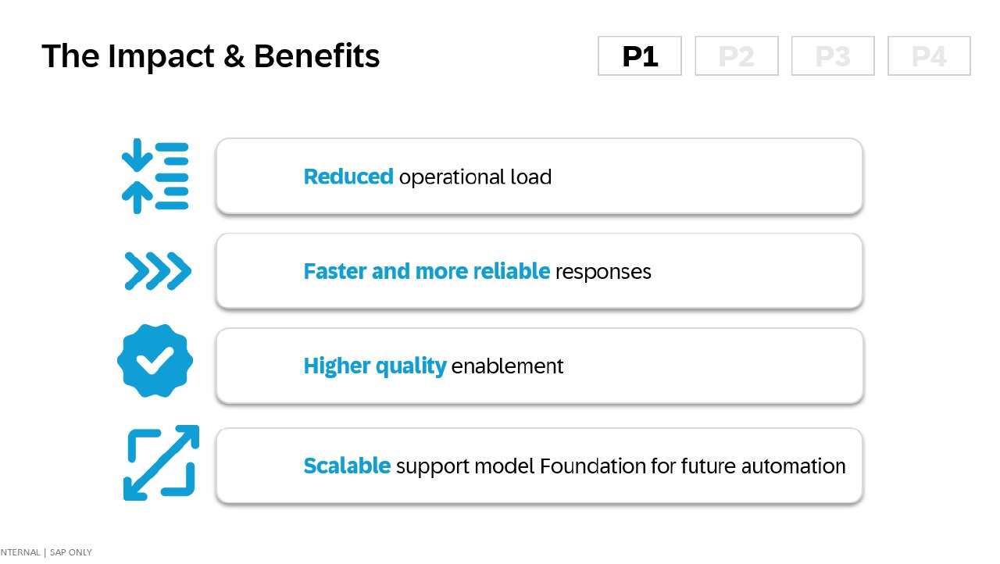

How One PMM Team Built an AI Agent to Tackle Field Inquiries
Jacob Brass and his cross-functional team at SAP developed a proof of concept Agentic AI Chatbot that shows what's possible for product marketing.
If you've ever spent your afternoon answering the same SKU question for the fifth time, or explaining approval workflows to yet another sales rep, you know the pain. Jacob Brass knew it too. So he and his team built a proof of concept to explore what AI could do about it.

At SAP, like at most enterprise software companies, Product Marketing Managers and Product Managers serve as the connective tissue between product development and the field. They're the experts—the people who know which SKUs do what, which solutions can be bundled, and why certain deals need special approval. That expertise makes them invaluable. It also makes them a bottleneck.
"The challenge was clear," explains the team's project documentation. "Product Marketing Managers and Product Managers face repetitive inquiries from field teams that require approval or explanations. The constant need to address these repetitive questions detracts from the PMM and PM's ability to concentrate on higher-level strategic initiatives, ultimately slowing down the sales cycle and affecting overall productivity and revenue."
Anyone who's worked in product marketing at scale recognizes this dynamic. You're hired to be strategic—to shape positioning, drive launches, enable sales teams with compelling narratives. Instead, you find yourself buried in email threads, Slack messages, and impromptu calls explaining the same concepts over and over. It's death by a thousand paper cuts.

A Proof of Concept: The Agentic AI Chatbot
Jacob Brass, a Product Marketing Manager in SAP's Business Data Cloud & Insights team, decided to tackle this problem head-on. He assembled a cross-functional team that brought together developers, designers, and domain experts from across the organization:
What they built as a proof of concept wasn't just another FAQ bot or simple chatbot. They explored what's increasingly being called an "Agentic AI"—an AI system capable of taking autonomous actions to complete tasks, not just answering questions. Their prototype demonstrates how such a system could automate responses for SKU questions, solution capability inquiries, and even certain approval workflows.

Why This Proof of Concept Matters

Even as a proof of concept, the implications extend far beyond SAP. It represents a template for how AI could transform the product marketing function—not by eliminating PMMs, but by amplifying their effectiveness.
Consider the potential math: If a PMM spends 2 hours a day answering repetitive field inquiries, that's 10 hours a week, or roughly 500 hours a year. That's 500 hours that could be spent on competitive intelligence, product launches, sales enablement content, or strategic planning. Multiply that across a team of 10 PMMs, and you're looking at potentially 5,000 hours of reclaimed strategic capacity.
The Four Pillars of Impact
- Reduced Operational Load: PMMs and PMs spend less time on repetitive inquiries
- Faster, More Reliable Responses: Field teams get instant, consistent answers 24/7
- Higher Quality Enablement: Consistent, accurate information every time
- Scalable Foundation: A platform that can expand to handle more use cases over time
The Technology Behind the Concept
What makes this proof of concept particularly interesting is how it's designed to integrate with existing systems. The chatbot wouldn't operate in isolation—it's built to connect with deal approval systems, understanding the context of specific deals, SKUs, and approval requirements.
Imagine a sales rep asking "Why is this deal flagged as Moderate Risk?" The AI could pull the relevant information from the system, explain the specific health exceptions that triggered the flag, and provide guidance on next steps. Currently, this requires a PMM to log into the system, review the deal, and craft a response—a process that can take 15-30 minutes per inquiry.
The system handles three primary categories of inquiries:
- SKU Questions: What's included in this SKU? Can these products be bundled? What's the pricing structure?
- Solution Capability Inquiries: Does this solution support X use case? How does it integrate with Y system?
- Approval Guidance: Why does this deal need approval? What information is required? Who needs to sign off?
Lessons for Every PMM Team
You don't need to be at SAP to apply these lessons. The pattern Jacob's team established is replicable:
1. Start with the Pain
Don't build AI for AI's sake. Identify the specific, repetitive tasks that consume disproportionate time. For Jacob's team, it was field inquiries. For your team, it might be competitive questions, pricing queries, or feature explanations.
2. Build Cross-Functionally
Notice that Jacob's team included developers, a UX designer, and domain experts. AI projects succeed when they combine technical capability with deep understanding of user needs. The PMM brings the domain expertise; the developers bring the technical chops; the designer ensures it's actually usable.
3. Integrate, Don't Isolate
The chatbot's power comes from its connection to existing systems. A standalone AI that can't access your CRM, your product database, or your deal system will have limited utility. The goal is augmented intelligence—AI that makes your existing tools smarter.
4. Think Platform, Not Project
The team explicitly designed this as a "scalable support model" and "foundation for future automation." They're not just solving today's problem—they're building infrastructure that can handle tomorrow's challenges.
The Bigger Picture
What Jacob Brass and his team have demonstrated with this proof of concept is a glimpse of a larger shift happening across product marketing. We're moving toward a world where PMMs are valued not primarily for their knowledge (which can increasingly be encoded in AI systems) but for their judgment, creativity, and strategic thinking.
The PMMs who thrive in this new world won't be the ones who can answer SKU questions fastest—they'll be the ones who can envision systems like this, who can identify opportunities for AI augmentation, and who can focus their time on work that genuinely requires human insight.
That's why Jacob's story matters. He saw a problem, assembled a cross-functional team, and built a working proof of concept to explore what's possible. That's exactly the kind of initiative that will define the future of product marketing.
Are You Building Something Similar?
We want to hear from PMM teams using AI to transform their work. Share your story and you could be our next User of the Week.
Submit Your Story →Congratulations to Jacob Brass and the entire team for exploring what's possible when product marketing embraces AI—not as a threat, but as a force multiplier. This proof of concept gives the rest of us a glimpse of what's to come.